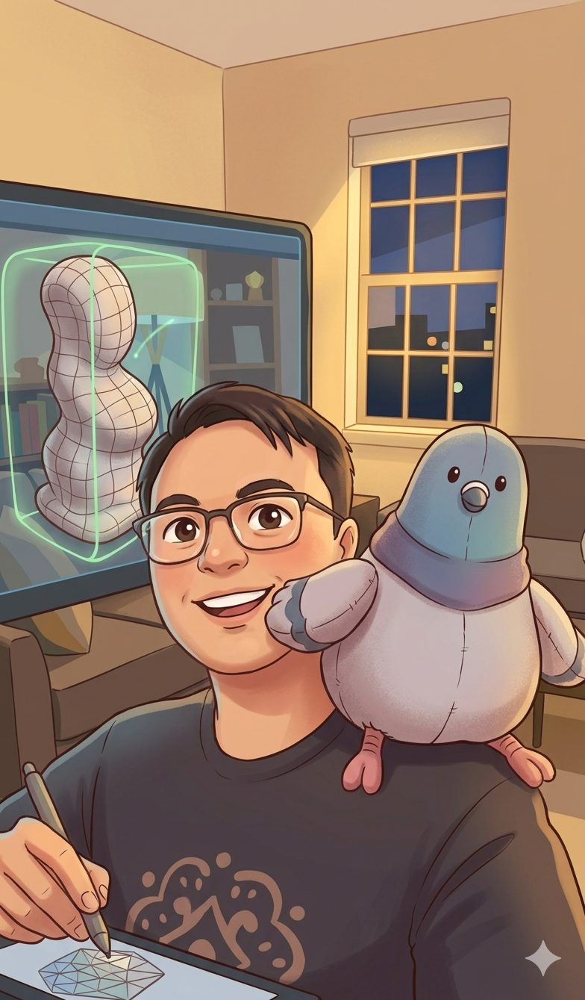
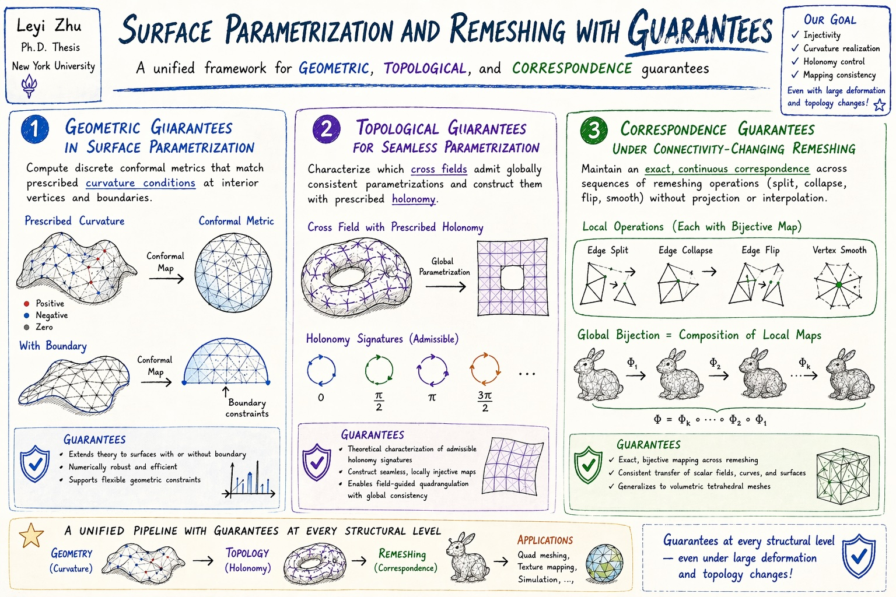
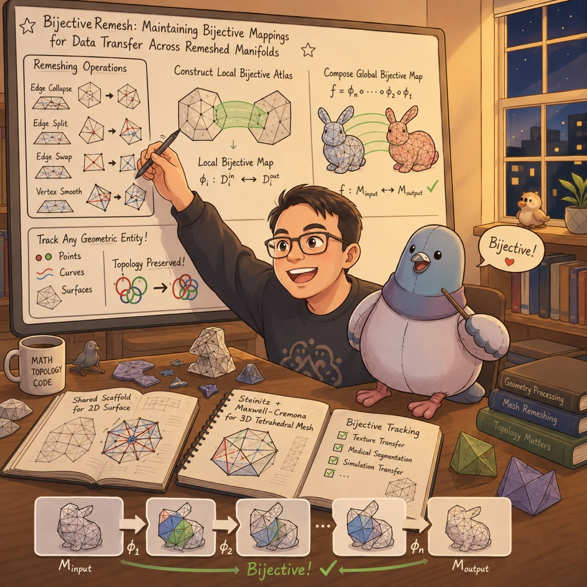
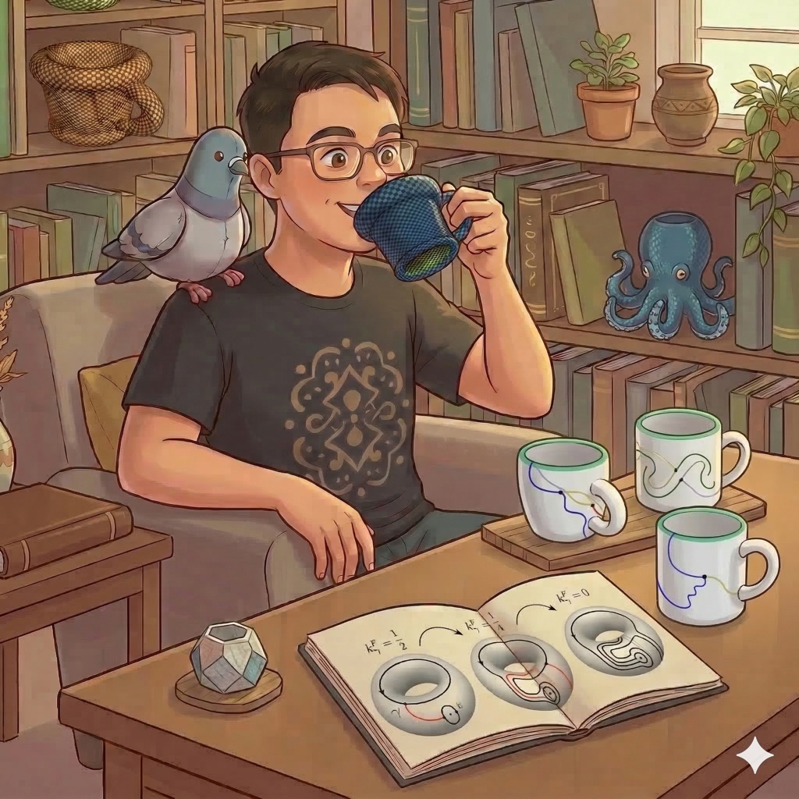
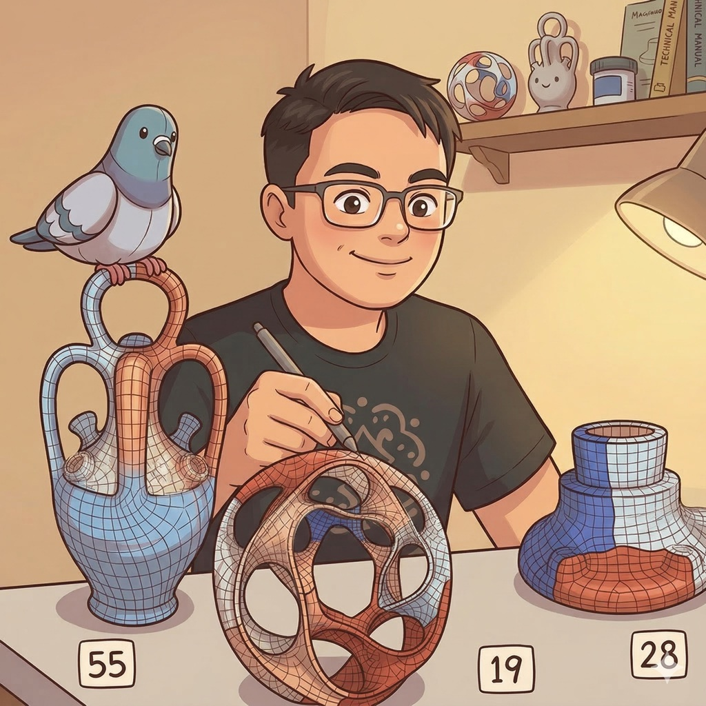
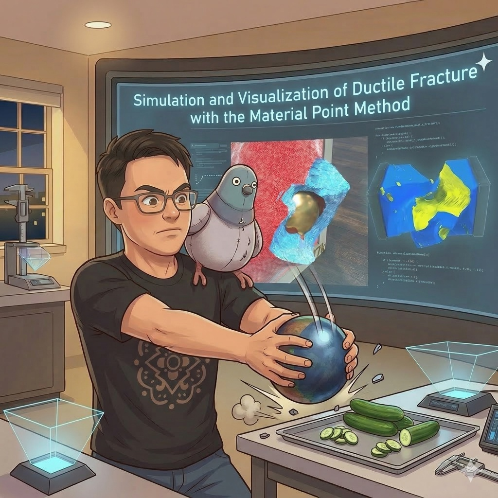
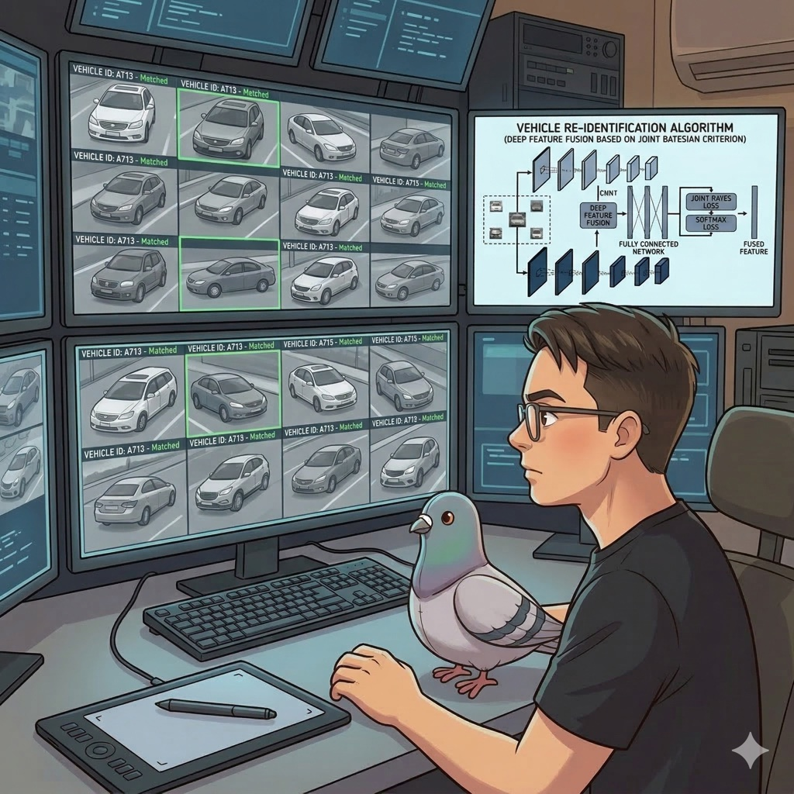

see me in real life
I write code for  .
I received my Ph.D. in Computer Science from the
Courant Institute of Mathematical Sciences
at New York University
, where I was advised by
Daniele Panozzo and
Denis Zorin.
My doctoral research focused on surface parametrization and remeshing with guarantees, with an emphasis
on developing robust geometry processing algorithms with provable correctness.
Prior to NYU, I received my B.S. in Computational Mathematics from the School of the Gifted Young
(少年班学院) at the
University of Science and Technology of China
.
I received my Ph.D. in Computer Science from the
Courant Institute of Mathematical Sciences
at New York University
, where I was advised by
Daniele Panozzo and
Denis Zorin.
My doctoral research focused on surface parametrization and remeshing with guarantees, with an emphasis
on developing robust geometry processing algorithms with provable correctness.
Prior to NYU, I received my B.S. in Computational Mathematics from the School of the Gifted Young
(少年班学院) at the
University of Science and Technology of China
 .
I also worked as a research intern at
, Tencent America.
.
I also worked as a research intern at
, Tencent America.

🤖 ChatGPT's take on my thesis Surface Parametrization and Remeshing with Guarantees, advised by Prof. Daniele Panozzo and Prof. Denis Zorin.
Selected Publications

BijectiveRemesh: Maintaining Bijective Mappings for Data Transfer Across Remeshed Manifolds
arXiv preprint, 2026
- We introduce BijectiveRemesh, a robust algorithm for maintaining a continuous, bijective mapping across complex remeshing sequences on both 2D triangle surfaces and 3D tetrahedral meshes.
- Unlike traditional data transfer methods that rely on interpolation or projection, our approach constructs a mathematically rigorous composite map by chaining local bijective atlases defined for each primitive operation.
- For 2D triangle meshes, we introduce a Shared Scaffold structure that enforces global bijectivity through local orientation preservation, extending successive self-parameterization to edge splits, edge swaps, and vertex smoothing.
- For 3D tetrahedral meshes, we generalize the local atlas construction using Steinitz's Theorem and Maxwell-Cremona lifting to ensure valid embeddings.
- This enables exact tracking of geometric entities—points, curves, and surfaces—across remeshing, with applications from texture transfer to volumetric simulations.

Which Cross Fields Can Be Quadrangulated?
ACM Transaction on Graphics (SIGGRAPH), 2022
- We describe a method for the generation of seamless surface parametrizations with guaranteed local injectivity and full control over holonomy.
- Local injectivity is required to enable these parametrizations' use in applications such as surface quadrangulation and spline construction.
- Holonomy control is crucial to enable guidance or prescription of the parametrization's isocurves based on directional information, in particular from cross-fields or feature curves.
- We investigate the relation between cross-field topology and seamless parametrization topology.
- Leveraging previous results on locally injective parametrization and combining them with insights on this relation in terms of holonomy, we propose an algorithm that meets these requirements.
- A key component relies on the insight that arbitrary surface cut graphs can be homeomorphically modified to assume almost any set of turning numbers with respect to a given target cross-field.

Efficient and Robust Discrete Conformal Equivalence with Boundary
ACM Transaction on Graphics (SIGGRAPH Asia), 2021
- We describe an efficient algorithm to compute a discrete metric with prescribed Gaussian curvature at all interior vertices and prescribed geodesic curvature along the boundary of a mesh.
- The metric is (discretely) conformally equivalent to the input metric.
- Its construction is based on theory developed in [Gu et al. 2018b] and [Springborn 2020], relying on results on hyperbolic ideal Delaunay triangulations.
- Generality is achieved by considering the surface's intrinsic triangulation as a degree of freedom, with particular attention paid to the proper treatment of surface boundaries.
- While via a double cover approach, the case with boundary can be reduced to the case without boundary naturally, the implied symmetry causes challenges related to stable Delaunay-critical configurations, which we address explicitly.
- We also explore the numerical limits of the approach and derive continuous maps from the discrete metrics.

Simulation and Visualization of Ductile Fracture with the Material Point Method
ACM SIGGRAPH / Eurographics Symposium on Computer Animation (SCA), 2019
★ Best Paper Award- We present novel techniques for simulating and visualizing ductile fracture with the Material Point Method (MPM).
- We utilize traditional particle-based MPM as well as the Lagrangian energy formulation, using a tetrahedron mesh instead of particle-based estimation for deformation gradient and potential energy.
- Failure and fracture are modeled through elastoplasticity with damage, using a softening model once material deformation exceeds a Rankine or von Mises yield condition.
- After damage, the material's Lamé coefficients are modified to represent failed material.
- We design visualization techniques to render the material boundary and its intersections with evolving crack surfaces.
- Our approach includes an efficient element-splitting strategy for tetrahedron meshes to represent cracks, utilizing an extrapolation technique based on the MPM simulation.
- For particle-based MPM, we use an initial Delaunay tetrahedralization to connect randomly initialized MPM particles.
- The visualization technique is a post-process, designed to run after the MPM simulation for efficiency.
- We demonstrate our method with challenging simulations of ductile failure, including persistent self-contact scenarios.

Vehicle Re-Id by Deep Feature Fusion Based on Joint Bayesian Criterion
International Conference on Pattern Recognition (ICPR), 2018
- Vehicle re-identification is challenging due to the minimal differences between vehicles of the same model.
- We propose to fuse deep features extracted by two different CNNs for vehicle re-identification.
- CNNs extract discriminative features for classification, and features from different CNNs complement each other by describing different aspects of the input image.
- We introduce a new loss function called the Joint Bayesian loss to fuse the different deep features.
- The Joint Bayesian loss minimizes intra-class variations and maximizes inter-class variations, making it suitable for vehicle re-identification.
- Experiments on a large-scale vehicle dataset demonstrate the effectiveness of our proposed method.
Academic Things
Teaching Assistant
-
Mathematical Analysis III
-
Mathematical Analysis I
-
Computer Graphics
Service
-
Reviewer, SIGGRAPH 2026
-
Reviewer, Eurographics 2026
-
Reviewer, IEEE SMC 2026
Fun Facts
5 dan
Go (围棋)
With a nine-stone handicap against AlphaGo, I like my chances. 🐶
4
Erdős Number
Four hops from Paul Erdős.
Shu Shia
Favorite Boba
Avocado smoothie is unbeatable.